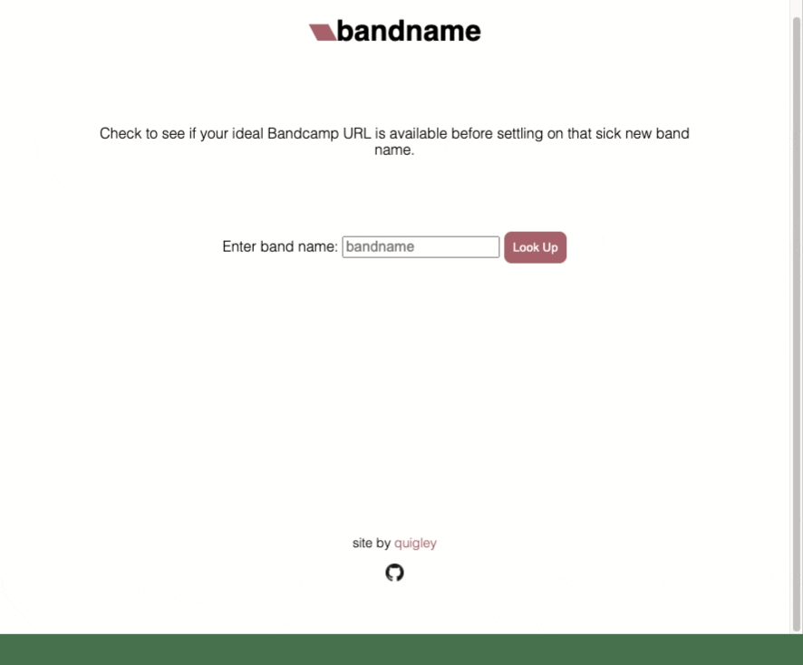
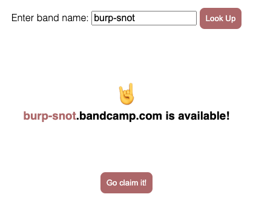

Bandname with JQuery & CORS Anywhere
Overview
Bandname is a very simple site that checks if a Bandcamp subdomain is available. It’s built using jQuery and a CORS Anywhere proxy running on Heroku.
Check it out here: https://quig.info/bandname
Source code is available on GitHub

I have a few musical projects that use Bandcamp to stream and sell music and merch. And while it’s not too difficult to whip up a new email and walk through the Bandcamp Signup page to see if a specific subdomain is available, it’s perhaps just a few more steps than is necessary. So I thought of creating a simple tool to avoid that process mostly just to have a quick new project.
Below I describe what’s actually going on. First is the actual JQuery request that gets us what we want to know (is this available?). Second is the CORS Anywhere proxy to be able to actually make the JQuery request, since Bandcamp has some restrictions on cross-origin resource sharing.
JQuery Request
If you navigate to some-desired-name.bandcamp.com and that subdomain already exists, you get the artist’s site at either their album list page or a specific album, depending on how they set that up. But if it does not yet exist, you would instead be brought to the Sign Up page with Some Desired Name populated into the artist name field. So I figured this is a simple enough destinction for us utilize in the app. We just need to attempt to request a specific subdomain, and scrape the returned page for some diferentiating info, in this case the <title> tag.
If the page exists, you’ll see the artist name in the title tag, something like <title>Music | Pile</title> or <title>Ovlov</title>. However, if the page does not exist and you are rerouted to the Sign Up page, you’ll see <title>Signup | Bandcamp</title>. So with this in mind, it’s just a matter of requesting the URL and parsing the returned data to test the title info.
We make a JQuery.ajax() request with the desired URL, which will return an object with a responseText property. This is a string of the site’s HTML content. We can use JQuery.parseHTML() which returns an array of the various DOM elements in the HTML content. We want the title property, which is the second index in the array, or [1], and within that is the innerText key which will either include the band name we searched or “Sign Up | Bandcamp”.
$.ajax({
url: url,
complete: function (data) {
response = $.parseHTML(data.responseText)[1].innerText;
}
...
});
So that’s the majority of the actual task. Once you have that data, you can test it and set various interface elements accordingly. In our case, we test if the response includes the sign up text and either let the user know if the subdomain is available or not. If it is, we show a button that links the user to the Bandcamp Sign Up page with the name field populated.
const signup = "Signup | Bandcamp";
...
bname.innerText = bandname;
warning.innerText = (response.includes(signup) ? '🤘\n' : '😭\n');
avail.innerText = '.bandcamp.com is ' + (response.includes(signup) ? 'available!' : 'not available');
The above code then looks like: 
CORS Anywhere
If you’ve tried to make a JQuery or fetch request to some other site, you may have run into various CORS errors before. They can be a headache and there are tons of forum posts with people struggling to sort them out. I won’t go too far into the weeds here. In short, from the MDB Web Docs: “For security reasons, browsers restrict cross-origin HTTP requests initiated from scripts.”
We care because this means our little script will get turned down by Bandcamp when it attempts to request the subdomain we’re testing. To get around this, we can use CORS Anywhere to setup a proxy server. Essentially, we pass the subdomain we want to check to the proxy server, which can then make the request to Bandcamp with the appropriate headers. This satisfies Bandcamp’s security needs, so the requested data is returned to the proxy, and then passed back through to our site.
CORS Anywhere is more or less good to go right off the bat. You just need to host it and limit requests only to your site, to avoid unwanted traffic. I chose to use Heroku, as I’d not had much experience with it prior and there’s a free tier which is definitely enough for a small project like this.
Basing instructions off of the Heroku “Getting Started With Node.js” article and CORS Anywhere repo…
//Install heroku:
brew install heroku/brew/heroku
//Login to your account:
heroku login
//Clone a local copy of the CORS Anywhere repo:
git clone git@github.com:Rob--W/cors-anywhere.git
//Create a heroku app:
heroku create bandname-proxy
//Set the whitelist (limit requests to our site):
heroku config:set CORSANYWHERE_WHITELIST=https://quig.info,http://quig.info
//Deploy the app:
git push heroku main
Now our proxy is up and running. To use it, we pass it our desired bandcamp subdomain and it returns the response. So up in our .ajax() request, we need to include the proxy in our URL. If we want to check pile.bandcamp.com, we need to use https://bandname-proxy.herokuapp.com/https://pile.bandcamp.com. In the code that looks like this:
const bandname = input.value.toLowerCase();
const url = 'https://bandname-proxy.herokuapp.com/https://' + bandname + '.bandcamp.com';
...
$.ajax({
url: url,
complete: function (data) {
response = $.parseHTML(data.responseText)[1].innerText;
}
...
});